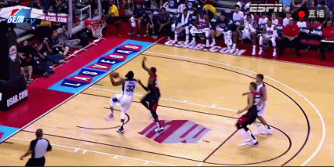

北京时间8月2日，在美国男篮队内分组对抗赛上，保罗-乔治在一次补防中意外受伤，
落地时右小腿折断，最终他被担架抬出场，立刻被送往当地医院接受手术。
当时比赛第四节才刚开始27秒，两队分差为10分。哈登持球快攻突破上篮，乔治从后面追身封盖犯规。但乔治在落地的时候似乎是为了躲避篮球架而没有站稳，右小腿直接折成了90度，随后他便倒地不起。在看到这一幕之后，乔治的队友们都感到非常的痛心。
现场队医在治疗时把乔治的右腿戴上了充气保护囊，在经过15分钟的治疗后，他才被送往医院。所有美国队成员以及乔治的家人一直陪伴在他身边。
这是美国新一届男篮首次进行的公开对抗赛，比赛地点在拉斯维加斯。男篮正式的12人大名单还没有出炉，但乔治入选原本是板上钉钉的事。在乔治受伤后，美国篮协也表示将会暂缓一切计划安排。
篮协主席克朗格洛表示：“我们不知道乔治的具体伤势，我们看到的和大家都一样。细节还要由医疗团队定夺。”
在受伤前，乔治的状态一直十分出色，过去几个赛季他的得分每年都在上涨，上赛季他场均得到21.7分6.8个篮板3.5次助攻和1.9个抢断。
在参加男篮训练营后，乔治在接受采访时数次表示对下赛季信心十足，称他期待着自己得分爆发，还要向麦蒂和科比学习。
“今年大家都会关注我的表现，我确实承受了不少压力。我相信我已经为未来的挑战准备好了。”他说。
他的意外受伤无疑令人痛心。他能否复出，复出后能否恢复以前的状态都尚未可知。